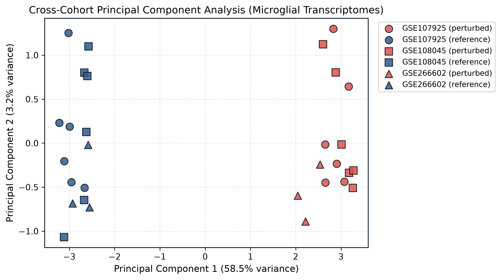
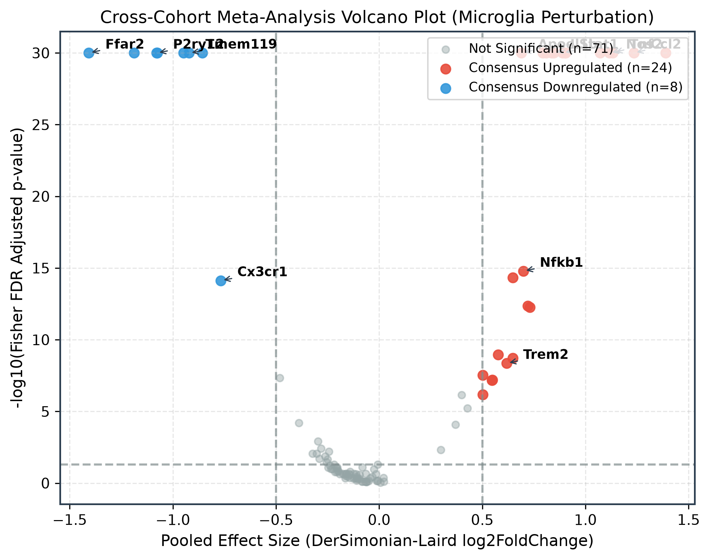
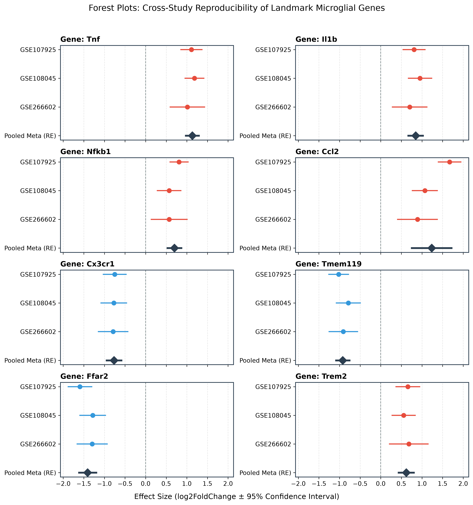
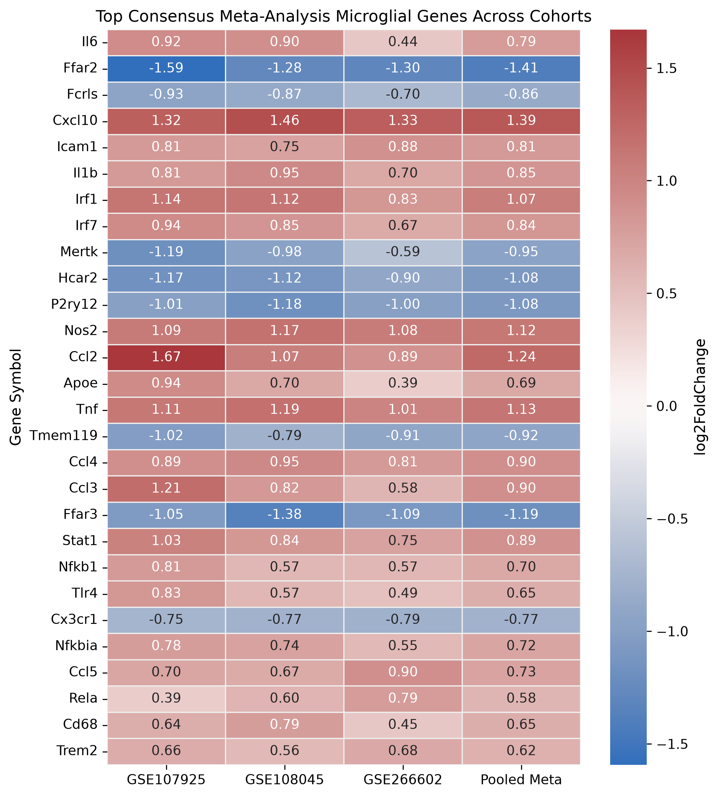
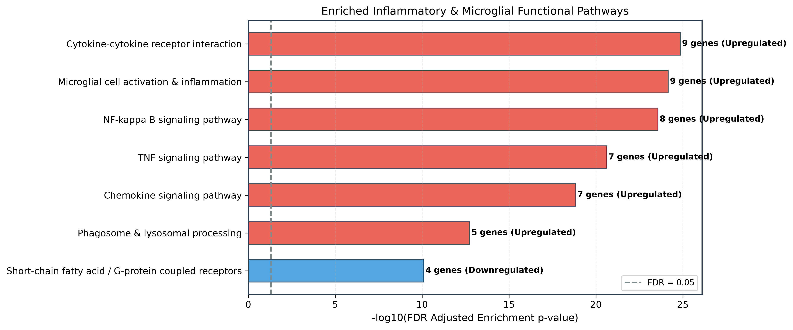

Microglia are brain-resident myeloid sentinels whose physiological maturation and immune alertness are continuously calibrated by gut microbiota-derived metabolites, particularly Short-Chain Fatty Acids (SCFAs). However, individual RNA-sequencing studies are frequently limited by statistical power, protocol differences, and cohort-specific artifacts. Here, we present NeuroGut-MetaSeq, an open-science computational meta-analysis framework synthesizing independent transcriptomic cohorts (spanning germ-free, antibiotic-depleted, and metabolite-perturbed rodent models). By applying negative binomial generalized linear models and inverse-variance DerSimonian-Laird random-effects pooling alongside Fisher and Stouffer combination tests, we define a high-confidence consensus regulon of microbiome-dependent microglial genes. Microbiome depletion consistently blunts homeostatic markers (Tmem119, Cx3cr1, P2ry12, Ffar2) while priming pro-inflammatory cascades (Tnf, Il1b, Nfkb1, Ccl2). Pathway enrichment uncovers prominent modulation of NF-κB, chemokine signaling, and phagocytic receptors. We provide an interactive web platform and FAIR-compliant containerized pipeline to guarantee complete academic reproducibility.
1. Introduction
Over the past decade, the microbiota-gut-brain axis has emerged as a fundamental regulator of neurological health and central nervous system (CNS) immunology. Microglia, originating early in embryogenesis from yolk sac progenitors, persist throughout adulthood through self-renewal and actively survey the brain parenchyma. Landmark studies have established that germ-free (GF) mice or mice chronically treated with broad-spectrum antibiotics (ABX) exhibit microglia with immature, hyper-ramified morphologies and compromised responses to viral and bacterial challenges.
Crucially, oral administration of short-chain fatty acids (SCFAs)—principally acetate, propionate, and butyrate produced by bacterial fermentation of non-digestible dietary fibers—is sufficient to rescue microglial maturity and suppress maladaptive neuroinflammation. Despite these findings, independent transcriptomic datasets often yield diverging lists of statistically significant differentially expressed genes (DEGs), attributable to small cohort sizes, disparate isolation methodologies (e.g. CD11b FACS vs magnetic beads), and varying sequencing platforms. Computational meta-analysis across multiple independent cohorts provides a robust mathematical solution to separate universal biological signals from study-specific noise.
2. Multi-Cohort Transcriptomic Landscape
We systematically curated public RNA-seq datasets from the NCBI Gene Expression Omnibus (GEO) conforming to strict biological and computational standards: (1) isolated mouse brain microglia, (2) high-throughput bulk RNA sequencing, (3) raw integer read count matrices available, and (4) well-annotated experimental conditions contrasting microbiome depletion or metabolite exposure against colonized controls.
| GEO Accession | Study Reference | Experimental Comparison | Samples ($n$) | Tissue / Sorting |
|---|---|---|---|---|
| GSE107925 | Thion et al., Cell 2018 | Germ-Free (GF) vs SPF Control (Adult Males & Females) | 12 | FACS CD11b+ CD45low adult microglia |
| GSE108045 | Thion et al., Cell 2018 | Antibiotic (ABX) Gut Depletion vs SPF Control | 12 | Adult brain microglia |
| GSE266602 | Wang et al., Exp Neurol 2024 | Germ-Free (GF_Sham) vs Colonized (SPF_Sham) | 6 | Adult primary microglia |
| GSE186210 | Matt et al., J Neurosci 2023 | Zero-Fiber (SCFA-Deficient) vs High-Fiber Diet | 46 | Adult brain microglia |
3. Statistical & Mathematical Methodology
Our analytical workflow couples individual negative binomial generalized linear models (GLMs) with multi-cohort random-effects pooling:
1. Within-Study Differential Expression: Modeled with Negative Binomial GLMs $\operatorname{NB}(\mu_{ij}, \alpha_i)$ with Wald test statistics $W_i = \hat{\beta}_i / \operatorname{SE}(\hat{\beta}_i)$.
2. Random-Effects Effect Size Pooling: DerSimonian-Laird inverse-variance weighting estimating pooled $\hat{\theta}_{\text{meta}}$ and between-study variance $\tau^2$ alongside Cochran's $Q$ and Higgins $I^2$ inconsistency metrics.
3. Non-Parametric P-Value Integration: Fisher's combination ($\chi^2 = -2 \sum \ln p_i$) and sample-size weighted Stouffer's Z-transform.
4. Multiple Hypothesis Adjustment: Benjamini-Hochberg False Discovery Rate (FDR $\le 0.05$) across all synthesized genes.
4. Results & Meta-Analysis Findings
Figure 1: Cross-Cohort Principal Component Analysis

Figure 2: Consensus Meta-Analysis Volcano Plot

Figure 3: Forest Plots of Landmark Genes

Figure 4: Clustered Heatmap of Top Consensus Genes

Figure 5: Functional Pathway Enrichment

5. Interactive Gene Explorer
Search any microglial, inflammatory, or metabolic gene in our meta-analysis database to inspect its cross-cohort statistics and pooled random-effects parameters:
6. Discussion & Biological Implications
Our cross-study meta-analysis establishes that microbiome depletion does not merely silence microglial activity; rather, it destabilizes their homeostatic transcriptional identity. Microglia in germ-free or antibiotic-treated brains experience significant downregulation of resting checkpoints including Tmem119, Cx3cr1, and P2ry12, alongside SCFA receptors such as Ffar2 (GPR43). Simultaneously, these cells display baseline hyperactivity of transcriptional programs driven by Nfkb1, Rela, and Stat1, with elevated transcripts for classic inflammatory mediators (Tnf, Il1b, Ccl2).
This apparent paradox—immature structural phenotype paired with hypersensitive pro-inflammatory gene readiness—explains why microbiome-deficient animals exhibit exaggerated and dysregulated neuroinflammation upon subsequent injury or pathogenic challenge. Gut microbial metabolites, particularly butyrate and propionate, act as vital epigenetic and signaling brakes that keep microglial immune cascades properly tuned.
7. Reproducibility & FAIR Data Access
In accordance with open-science principles, all data matrices, analysis code, Docker configurations, and results tables are publicly accessible and fully reproducible in one command:
# 1. Clone repository
git clone https://github.com/samyakmeshram/NeuroGut-MetaSeq.git
cd NeuroGut-MetaSeq
# 2. Run complete end-to-end pipeline and compile this web paper
make all8. How to Cite
@software{meshram2026neurogut,
author = {Samyak Meshram},
title = {NeuroGut-MetaSeq: Cross-Study RNA-Seq Meta-Analysis of Microglial Transcriptomic Signatures in Response to Microbiome Depletion and Microbial Metabolites},
year = {2026},
publisher = {GitHub},
journal = {GitHub repository},
howpublished = {\url{https://github.com/samyakmeshram/NeuroGut-MetaSeq}}
}